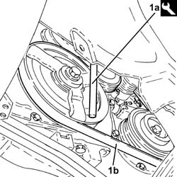
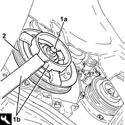
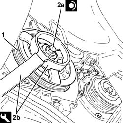
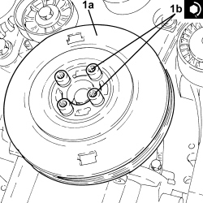
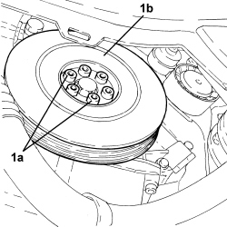
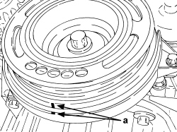
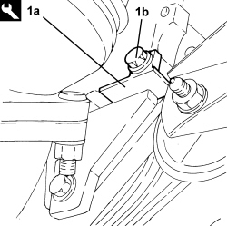
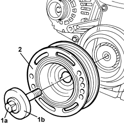

1092A10 CRANKSHAFT PULLEY - R + R
- Path
- Procedures > 10 ENGINE > 1092 ENGINE COMPONENT MISCELLANEOUS DRIVES > 1092A CRANKSHAFT PULLEY AND IDLE PULLEYS > 1092A10 CRANKSHAFT PULLEY - R + R
- Kind
- repair procedure (removal / refitting; the operation number is the code)
- Applies to
- all engines; all production periods
- Interactive page
- https://sloeber94.github.io/elrnDB-fCrm/en/#/194000415
Applies to: engines: 2.2; all production periods
 Removing
Removing
 Refitting
Refitting- Position the vehicle on a lift.
Op. 4450B04 RIGHT FRONT WHEEL - R.R
Op. 7055B66 ENGINE COMPARTMENT DUST COVER IN RIGHT FRONT WHEEL ARCH - R.R.
1. Use tool (1a) to adjust the mobile tensioner and prise off the auxiliary drivebelt (1b).
Tool | Description | Function | Validity |
|---|---|---|---|
1860815000 | Flange | Crankshaft rotation | 1.8 |

Applies to: engines: 2.2; all production periods
1. Undo the nut (1a) securing the crankshaft pulley using the tool (1b) for counter-torque.
Tool | Description | Function | Validity |
|---|---|---|---|
2000001000 | Counter-torque | Loosen/tighten crankshaft pulley fixing bolt | 2.2 |
2. Remove the crankshaft pulley.

Applies to: engines: 2.2; all production periods
Refitting
Removing1. Replace the crankshaft pulley in its housing.
2. Tighten the new bolt (2a) securing the crankshaft to the recommended torque using the tool (2b) for counter-torque.
Component | Fastening | dia | Value (daNm) | Validity |
|---|---|---|---|---|
Services pulley on crankshaft | Bolt (to be replaced) | M14 X 1.5 | (engine crankshaft side) 10.0 +75° + 15° | 2.2 |
Tool | Description | Function | Validity |
|---|---|---|---|
2000001000 | Counter-torque | Loosen/tighten crankshaft pulley fixing bolt | 2.2 |

Applies to: engines: 2.2; all production periods
- Refit the auxiliary drivebelt by adjusting the moving tensioner with the tool.
Tool | Description | Function | Validity |
|---|---|---|---|
1860815000 | Flange | Crankshaft rotation | 1.8 |
Op. 7055B66 ENGINE COMPARTMENT DUST COVER IN RIGHT FRONT WHEEL ARCH - R.R.
Op. 4450B04 RIGHT FRONT WHEEL - R.R
- Remove the vehicle from the lift.
Applies to: engines: 1.9 JTD 8v, 1.9 JTD 16v; all production periods
Removing
Refitting- Position the vehicle on a lift.
Op. 4450B04 RIGHT FRONT WHEEL - R.R
Op. 7055B66 ENGINE COMPARTMENT DUST COVER IN RIGHT FRONT WHEEL ARCH - R.R.
Op. 7055B91 RIGHT FRONT WHEEL ARCH LINER - R.R.
Op. 1092G10 SINGLE ENGINE BELT - R.R
1. Undo the bolts (1a) and remove the service pulley on the crankshaft (1b).

Applies to: engines: 1.9 JTD 8v, 1.9 JTD 16v; all production periods
Refitting
Removing1. Position the crankshaft service pulley (1a) in its housing and secure it tightening the bolts (1b) to the recommended torque.
Component | Fastening | dia | Value (daNm) | Validity |
|---|---|---|---|---|
Services pulley on crankshaft | Bolt | M8 | (drive pulley side) 2.3 - 2.8 | 1.9 JTD 16v 1.9 JTD 8v 2.4 JTD 20v |

Applies to: engines: 1.9 JTD 8v, 1.9 JTD 16v; all production periods
Op. 1092G10 SINGLE ENGINE BELT - R.R
Op. 7055B91 RIGHT FRONT WHEEL ARCH LINER - R.R.
Op. 7055B66 ENGINE COMPARTMENT DUST COVER IN RIGHT FRONT WHEEL ARCH - R.R.
Op. 4450B04 RIGHT FRONT WHEEL - R.R
- Remove the vehicle from the lift.
Applies to: engines: 2.4 JTD 20v; all production periods
Removing
Refitting- Position the vehicle on a lift.
Op. 4450B04 RIGHT FRONT WHEEL - R.R
Op. 7055B66 ENGINE COMPARTMENT DUST COVER IN RIGHT FRONT WHEEL ARCH - R.R.
Op. 7055B91 RIGHT FRONT WHEEL ARCH LINER - R.R.
Op. 1092D10 AIR CONDITIONER COMPRESSOR DRIVE BELT - R + R
1. Undo the bolts (1a) and remove the service pulley on the crankshaft (1b).

Applies to: engines: 2.4 JTD 20v; all production periods
Refitting
Removing- Position the service pulley on the crankshaft in its housing and secure it tightening the bolts to the recommended torque.
Component | Fastening | dia | Value (daNm) | Validity |
|---|---|---|---|---|
Services pulley on crankshaft | Bolt | M8 | (drive pulley side) 2.3 - 2.8 | 1.9 JTD 16v 1.9 JTD 8v 2.4 JTD 20v |
Op. 1092D10 AIR CONDITIONER COMPRESSOR DRIVE BELT - R + R
Op. 7055B91 RIGHT FRONT WHEEL ARCH LINER - R.R.
Op. 7055B66 ENGINE COMPARTMENT DUST COVER IN RIGHT FRONT WHEEL ARCH - R.R.
Op. 4450B04 RIGHT FRONT WHEEL - R.R
- Remove the vehicle from the lift.
Applies to: engines: 1.8; all production periods
Removing
RefittingOp. 1092G10 SINGLE ENGINE BELT - R.R

Applies to: engines: 1.8; all production periods
1. Fit the flywheel retaining tool (1a) using bolt (1b) securing the gearbox to the engine block.
Tool | Description | Function | Validity |
|---|---|---|---|
2000012800 | Flywheel lock | Counter-torque | 1.8 |

Applies to: engines: 1.8; all production periods
1. Unscrew bolt (1a) complete with spacer (1b).
2. Remove the service pulley from the crankshaft.

Applies to: engines: 1.8; all production periods
Refitting
Removing- Place the service pulley in position on the crankshaft, fit the spacer and tighten the bolt to the recommended torque.
Component | Fastening | dia | Value (daNm) | Validity |
|---|---|---|---|---|
Services pulley on crankshaft | Bolt (to be replaced) | - | 9.5 + 30° + 15° | 1.8 |
- Unscrew the flywheel retaining bolt and remove. Remove the flywheel retaining tool and tighten the bolt securing the gearbox to the specified torque.
- Tighten the gearbox retaining bolt to the recommended torque.
Component | Fastening | dia | Value (daNm) | Validity |
|---|---|---|---|---|
Manual gearbox | Bolt | M12 | (engine crankcase side) 4.8 - 7.2 | 1.8 2.2 |
Topics linked from this page (5)
- 1092G10 SINGLE ENGINE BELT - R.R
- 1092D10 AIR CONDITIONER COMPRESSOR DRIVE BELT - R + R
- 4450B04 RIGHT FRONT WHEEL - R.R
- 7055B66 ENGINE COMPARTMENT DUST COVER IN RIGHT FRONT WHEEL ARCH - R.R.
- 7055B91 RIGHT FRONT WHEEL ARCH LINER - R.R.
Topics that link to this page (25)
- 1016C10 SINGLE CYLINDER HEAD - R.R. AND REPLACE GASKET
- 1020A20 CRANKCASE OIL SUMP - R.R CLEAN SURFACES FOR SEALANT APPLICATION
- 1020D14 FRONT CRANKSHAFT OIL SEAL COVER - R.R AND REPLACE SEALS FOR VERSIONS WITH OIL PUMP ON CRANKSHAFT, TIMING SIDE
- 1020D18 FRONT CRANKSHAFT COVER OIL SEAL - R.R.
- 1028H20 PISTON WITH CONNECTING ROD - R.R
- 1032B10 TOOTHED TIMING BELT - R + R FOR TIMING ADJUSTMENT OR REPLACEMENT
- 1032B46 TOOTHED DRIVE PULLEY - R + R
- 1032C18 TIMING BELT MOVING TENSIONER - R.R.
- 1032C41 TIMING SYSTEM FIXED CHAIN TENSIONER PAD R R
- 1032C42 TIMING BELT TENSIONER SUPPORT - R.R
- 1032D27 TIMING SYSTEM FRONT PROTECTIVE COVER (LOWER PART) - R.R.
- 1036B10 OVERHEAD CAMSHAFT IN CYLINDER HEAD - R.R ON VEHICLE
- 1036C41 PHASE TRANSFORMER ON OVERHEAD CAMSHAFT (ONE) INTAKE EXHAUST ON CYLINDER HEAD - R.R.
- 1036C42 VARIABLE VALVE TIMING SYSTEM ON INTAKE EXHAUST CAMSHAFT IN CYLINDER HEAD R R
- 1036L10 CAMSHAFTS IN CAMSHAFT HOUSING - R.R. - INCLUDES CAMSHAFT HOUSING REPLACEMENT IF NECESSARY
- 1036L30 FRONT OIL SEAL FOR CAMSHAFT IN CAMSHAFT HOUSING - REPLACE
- 1060E10 DIESEL INJECTION PRESSURE PUMP - R.R.
- 1060E30 PRESSURE PUMP DRIVE PULLEY - R.R.
- 1060E40 PRESSURE PUMP SUPPORT - R.R.
- 1060G22 CAM ANGLE SENSOR - R.R
- 1072B10 INLET MANIFOLD - R + R AND REPLACE SEAL
- 1084A40 ENGINE OIL LEVEL SENSOR - R + R
- 1084B26 ENGINE OIL INTAKE DUCT - R.R
- 1092D20 AIR CONDITIONER COMPRESSOR BELT MOBILE TENSIONER - R R
- 3330D03 SERVO BRAKE / BRAKE PUMP ASSEMBLY - R.R. FOR RIGHT DRIVE VERSIONS